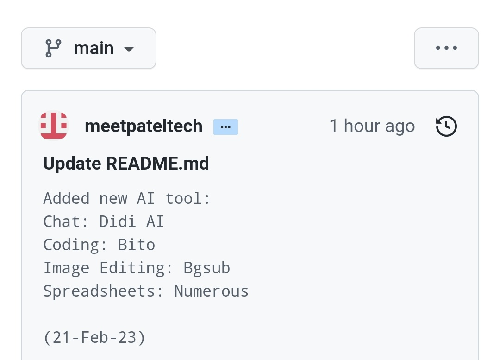

What is this GitHub repository?
This repository contains a collection of AI-based tools that are organized by category. The tools collection are open source and can be used, modified, and shared by anyone.
How are the AI-based tools in this repository organized?
The tools are organized by category such as Audio/Music/Image/Video/Code etc... Some AI tools may overlap or be found in multiple categories, so feel free to explore and find the tool that best fits your needs.
How can we identify which AI tool has been recently added to the AI Infinity GitHub repository?
We are constantly updating the AI Infinity repository with the latest and greatest AI tools available. While we are working on an automatic changelog generation page, you can currently check the commit comments in the three-dot menu as shown below. This will give you a good idea of which tools were added in the most recent update. Stay tuned for more updates and improvements to come!

Is this repository sponsored by any AI tools sites?
No, this repository is not sponsored by any AI tools sites. It is a community-driven project created and maintained by volunteers.
Can I add more AI-based tools to this repository?
Yes, you can! We welcome contributions and additions to the repository. If you would like to add a new tool, please submit a issues/pull request or submit
here
Are there any specific requirements for the AI-based tools that can be added to this repository?
The tools should be well-documented with clear instructions on how to use them. The tools should be in a working state and should be relevant to the category they are added to.
Are all the tools in this repository free to use?
Some of the tools in this repository may be free to use, while others may require a trial or paid subscription. We do not currently provide a free/paid tag on the tools in the repository, so it is important to check the details on the tool's website before using it. Some of the tools may have limitations or require payment for certain features. We recommend reviewing the terms and conditions of the tool's website before using it. It's possible that in the future we'll add this tag for easy sorting of tools, but it's not guaranteed.
Why are the tool links in the format of aiinfinity.blogspot.com?
The links are in the format of aiinfinity.blogspot.com because we use this as a way to track which categories and tools are the most popular among our users. By collecting this data, we will be able to better structure our website in the future to provide a more user-friendly experience for those looking for AI tools and resources. Please note that this site will redirect to the tool site in less than 5 seconds,once we have a proper website designed, we'll remove the redirect sites.
Is there any support for the tools collection in this repository?
This is a community-driven project and support is limited. However, you can raise issues or questions on the repository, the maintainers or community members will try their best to assist you.
Also you can help us improve AI Infinity by sharing your suggestions and feedback through
this google form.